This example deploys a partitioned data grid across several machines. It demonstrates the Elastic PU elasticity, continuous high-availability and even data (primary) distribution across all existing resources available for the grid. As long as there is enough memory resources across the available machines, the data grid primary and backup instances will be provisioned , ensuring no data loss while spreading the instances evenly.
The Data-Grid cluster: |
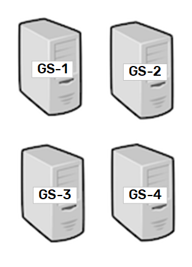 |
|
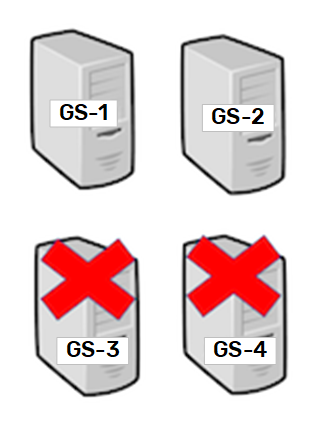 |
Management node (
./gs-agent.sh --esm=1 --lus=1 --gsm=1
Other nodes (
./gs-agent.sh
<?xml version="1.0" encoding="UTF-8"?>
<beans xmlns="http://www.springframework.org/schema/beans"
xmlns:xsi="http://www.w3.org/2001/XMLSchema-instance"
xmlns:os-core="http://www.openspaces.org/schema/core"
xmlns:blob-store="http://www.openspaces.org/schema/mapdb-blob-store"
xsi:schemaLocation="http://www.springframework.org/schema/beans http://www.springframework.org/schema/beans/spring-beans-[%=Versions.spring-short%].xsd
http://www.openspaces.org/schema/core http://www.openspaces.org/schema/[%=Versions.product-version-short%]/core/openspaces-core.xsd
http://www.openspaces.org/schema/mapdb-blob-store http://www.openspaces.org/schema/[%=Versions.product-version-short%]/mapdb-blob-store/openspaces-mapdb-blobstore.xsd">
<blob-store:mapdb-blob-store id="offheapBlobstore"/>
<os-core:embedded-space id="space" space-name="offheap-space">
<os-core:blob-store-data-policy persistent="false" blob-store-handler="offheapBlobstore"/>
</os-core:space>
<os-core:giga-space id="gigaSpace" space="space"/>
</beans>
<?xml version="1.0" encoding="UTF-8"?>
<beans xmlns="http://www.springframework.org/schema/beans"
xmlns:xsi="http://www.w3.org/2001/XMLSchema-instance"
xmlns:os-core="http://www.openspaces.org/schema/core"
xmlns:blob-store="http://www.openspaces.org/schema/mapdb-blob-store"
xsi:schemaLocation="http://www.springframework.org/schema/beans http://www.springframework.org/schema/beans/spring-beans.xsd
http://www.openspaces.org/schema/core http://www.openspaces.org/schema/[%=Versions.product-version-short%]/core/openspaces-core.xsd
http://www.openspaces.org/schema/mapdb-blob-store http://www.openspaces.org/schema/[%=Versions.product-version-short%]/mapdb-blob-store/openspaces-mapdb-blobstore.xsd">
<blob-store:mapdb-blob-store id="offheapBlobstore"/>
<os-core:embedded-space id="space" space-name="offheap-space">
<os-core:blob-store-data-policy persistent="false" blob-store-handler="offheapBlobstore"/>
</os-core:space>
<os-core:giga-space id="gigaSpace" space="space"/>
</beans>
The following command will start a stateful elastic PU with 8 partitions:
./gs.sh deploy-elastic-pu -type stateful -ha true -memory-capacity-per-container 500m -number-of-partitions 8 -puname offheap-space
You can see now in the Web Management Console that all machines and partitions are up and running:
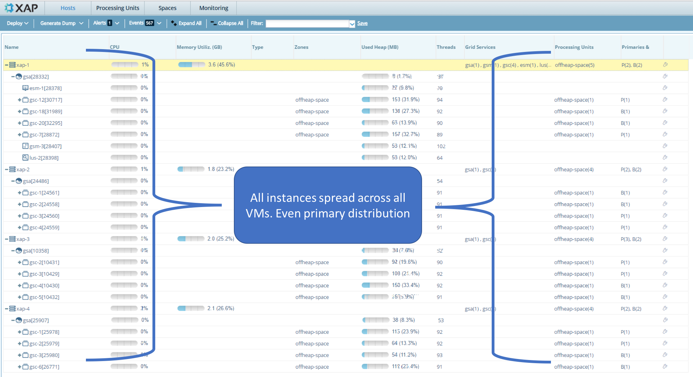
Lets shut down instance 4. You will see in the web management console, that all instances have been distributed evenly across the rest of the available resources:
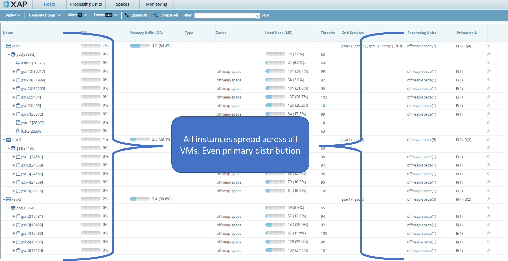
You can see that all primary and backup instances have been provisioned into the other remaining VM's:
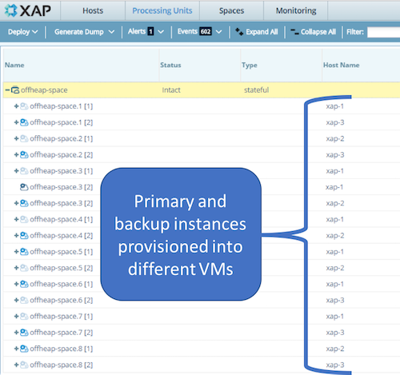
Lets shut down instance 3. Again look at the web management console: 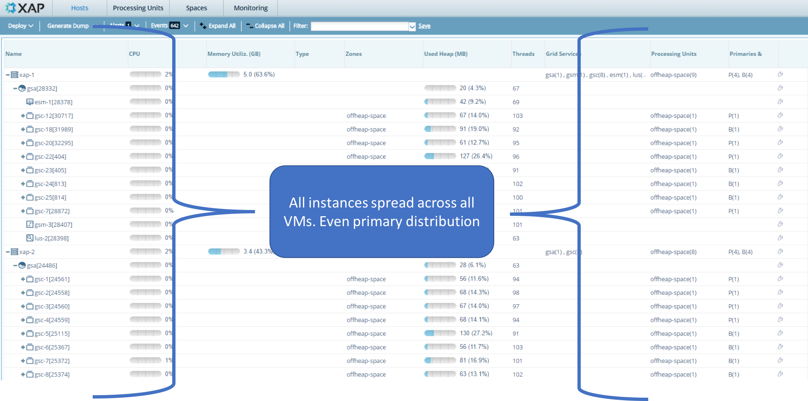
You can see that all primary and backup instances have been provisioned into the other remaining VM's:
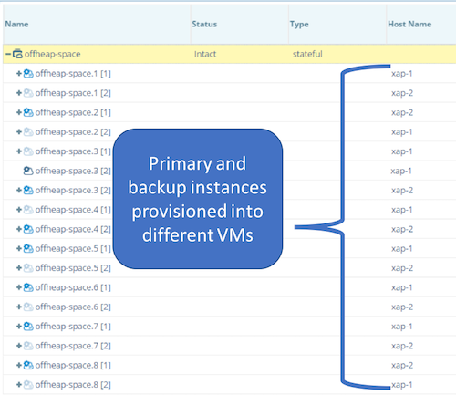
Once you restart this instance, you will see that the existing primaries and backup instances are rebalanced over all three servers:
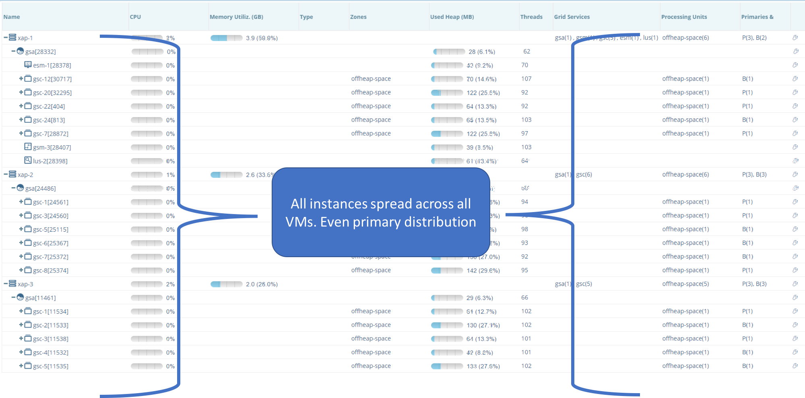
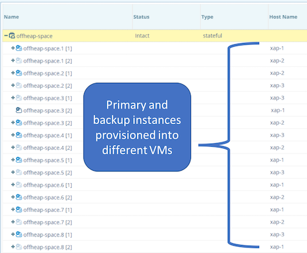
Again, you will see that the existing primaries and backup instances are rebalanced over all four servers:
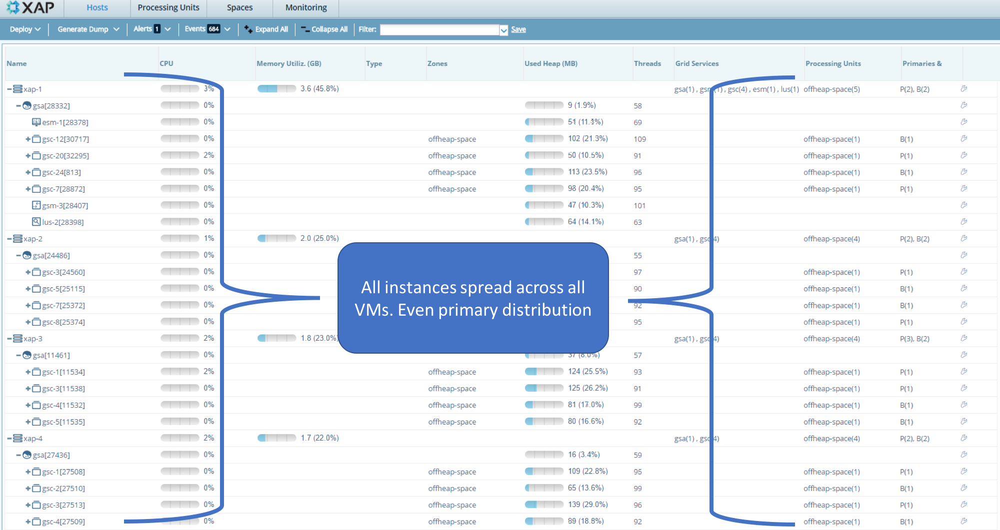
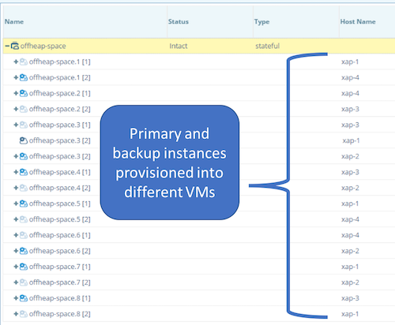